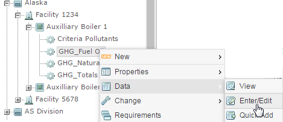
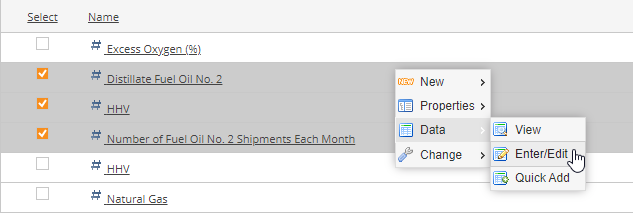
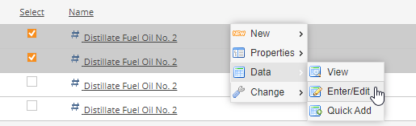
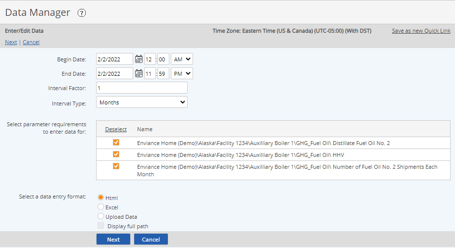
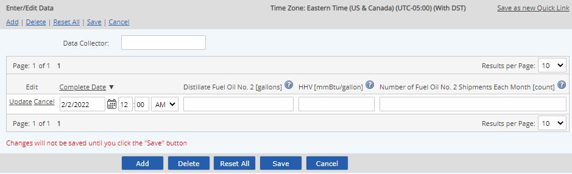
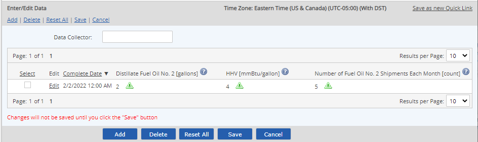
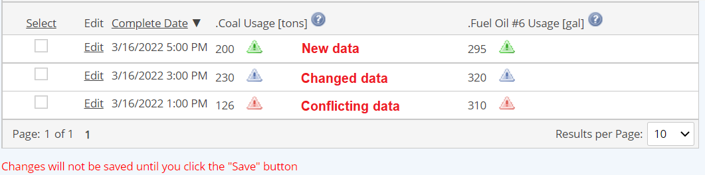
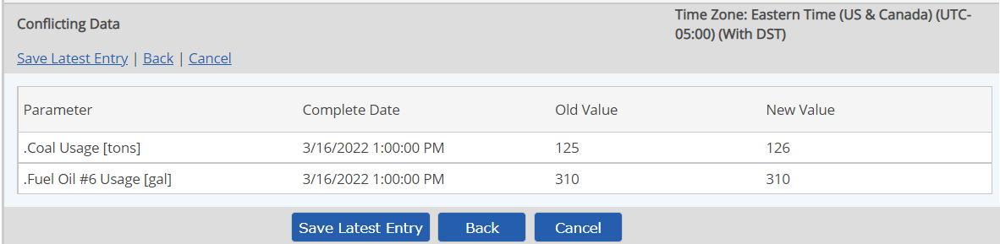
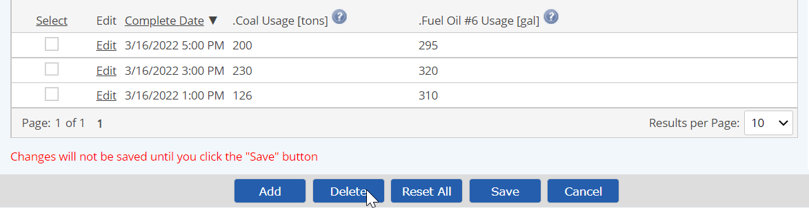

The Data Enter/Edit function gives you the full data entry and editing functions, without regard to periodicity of data. This standard data entry mode is used primarily for editing existing data, or when a limited number of discrete data points need to be entered.
When using standard data entry mode, data points must be added one at a time. With Quick Add, multiple data points for regular intervals may be entered at once.
Calculated data may not be edited, with the one exception being data for a time-based subtraction requirement, which may be edited to allow for manually resetting the value to 0 (or other specific value).
To enter or edit data for multiple parameters using Data Enter/Edit:
First, select the requirements for which you want to enter data by one of the following methods:
For parameters under the same parent, right click the parent object of the parameters and choose Data > Enter/Edit.

From the Requirements view for the parent object, select the checkboxes for one or more parameters for which to enter data. Then right click and choose Data > Enter/Edit.

For requirements under different immediate parent objects, select a common higher parent in the System Model tree, then use the Search function in the Applicable Requirements view to find the requirements. See Searching. Then select the parameters and choose data entry mode as above.

Enter a date range for data entry or editing.
Begin and End dates default to current day. You can enter data outside this range from the data entry screen, but you will not be able to view data for editing outside this range.
The Interval Factor and Type boxes are used to auto-increment the date/time when you add subsequent data points after the first from the data entry screen. For Excel upload, data entry rows will be created in the downloaded Excel file at specificied intervals with pre-completed date/time.
Refine your requirements selection, if necessary. You may select or de-select any requirements. (Deselect or Select in column head for all.)
To save this filter as a Quick Link, so it can be added to your dashboard for easy access next time, click Save as Quick Link.
Chose the format for data entry: HTML or Excel. Then click Next.

If the data entry mode selected is Excel, you will have the option of downloading an Excel file to complete the data entry. See Excel Data Upload.
If the data entry mode is HTML, the data entry screen appears. Existing data for the specified time period, if any, is shown.
To add data, click Add to add a new data point. A new data row is created with fields available for entry.
Caution: Be sure to check the date/time for the new data point and edit it appropriately. If you did not set the Interval Factor on the previous page, the next data point will use a date time of 1 minute past the last datapoint.
To edit data, select the Edit link for the record that you want to edit to enable the fields for editing. Edit values as needed. Then click Update.
To distinguish between parameters with the same name in different locations, click the ? icon next to the parameter name to display the complete path for the parameter.
Enter or edit data as needed.
The Complete Date is the date/time at which the data will be stored. The date/time defaults to the current day at 12:00 AM and may be edited as desired. The date/time must be unique (only one data point can be stored for the same date/time).
Select Update.

The data line is displayed for review, but is not yet saved.
A green icon indicates new data.

A red icon indicates that new data conflicts with existing data.
A blue icon indicates edited data.

No data is saved until you click Save.
You may more data points by selecting Add. The next data point increments the date/time by the interval factor selected in the previous screen, but the date/time may be edited as desired.
Caution: If you left the Interval Type as Hourly on the previous page, adding a new data point will increase the time by one hour. The usual time to store most periodic data points (daily, monthly, etc.) is 12:00am so, if you change the date, remember to correct the time, too, if necessary.
Select Save to save the data.
If conflicting data exists, another page is presented that shows the conflicting data with the old and new values. Click Save Latest Entry to overwrite the old data, Back to return and edit the data point, or Cancel to cancel the data entry altogether.

After saving, a confirmation message appears informing you that the transaction has been queued.
Data entries may not be immediately visible in the system. The process time will depend on the amount of calculation or re-calculation required and the system load. You can check the status of a command immediately by clicking View Commands. Completed transactions have the status Succeeded. Transactions still in process may be Processing or Waiting. Failed commands should be reported to your administrator. Data from a failed transaction is not saved and will need to be resubmitted once the problem is resolved.
The Comply and Internal Comply fields are set automatically according to the system model configuration and may not be edited. To change these values, you must edit the limit history for the requirement, as they are used to generate data warnings when regulatory or internal limits are exceeded.
To delete data:
In the Data Enter/Edit screen, check the box for the records that you want to delete.

Note that you can delete all data points for the same data/time for multiple selected parameters.
Select Delete.
The data is removed from the list of data records. Data deletion is not final until you click Save to save the changes.
Select Save.
After saving, a confirmation message appears informing you that the transaction has been queued. You can check the status of a command immediately by clicking View Commands.